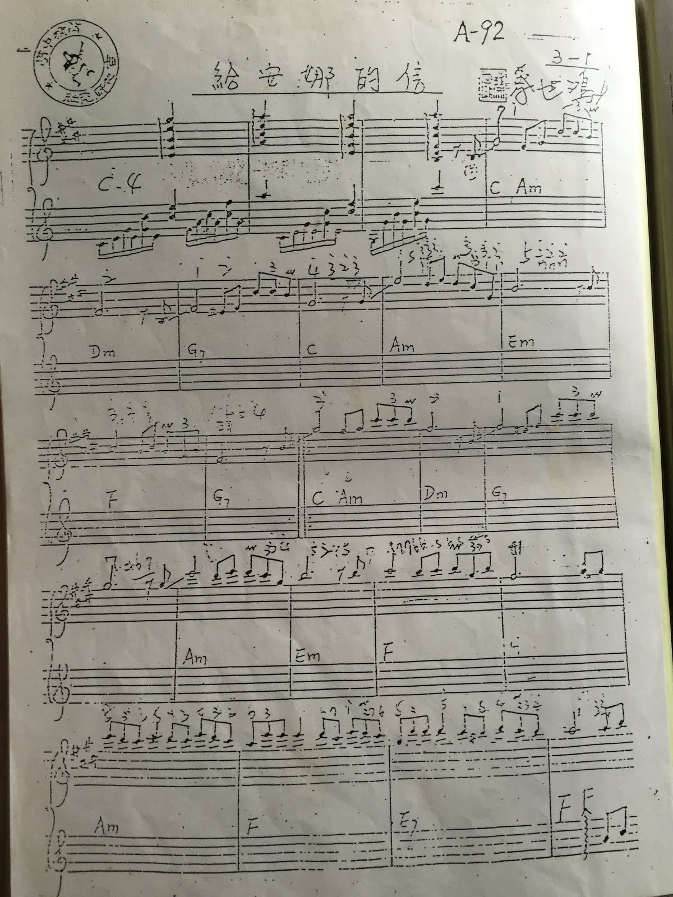
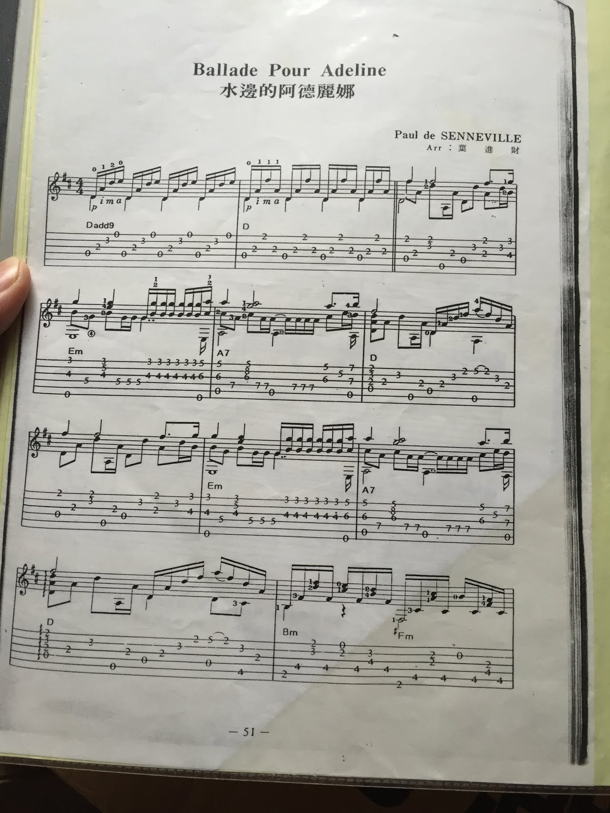
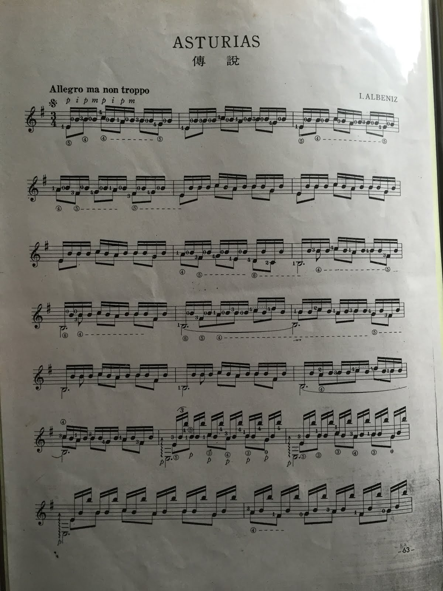
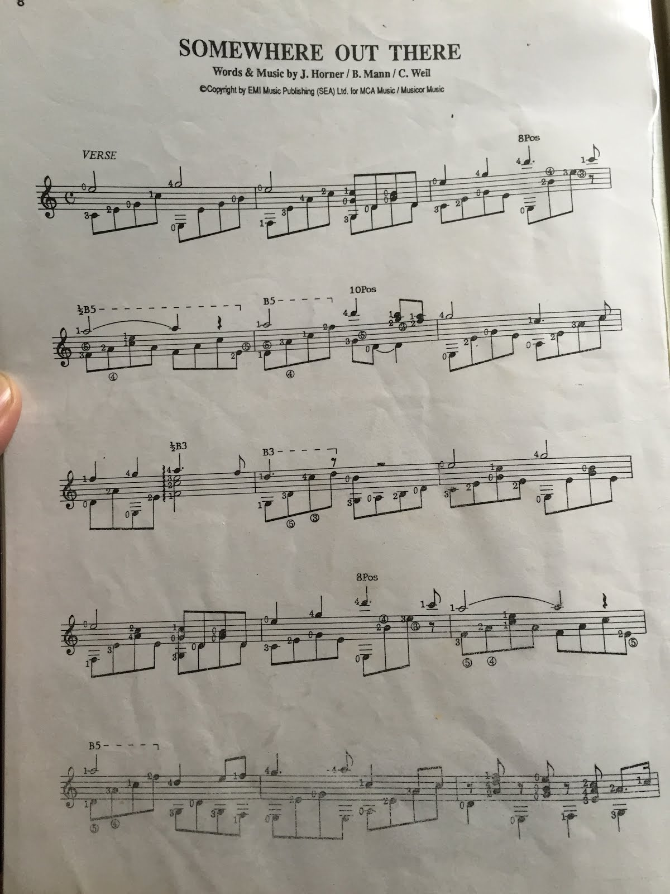

那些年練過的古典吉他歌曲
發布日期：2016-03-12
前一篇聊的是關於流行歌曲的回憶，順著我自己的學習途徑，原點學習的是尼龍吉他 (Nylon Guitar)，或稱作 古典吉他。為啥會選擇古典吉他？因為當時根本不知道吉他還有分尼龍弦、鋼弦、插電的 …. XDD
在學古典吉他之前，其實我也沒聽過相關的曲子，不過小時候對音樂的接受度很高，學長喂的、社團老師教的大多都照吃不誤。也因此聽了不少古典的曲子，後來會自己跑去聽交響樂、協奏曲，這大概是其中之一的因素吧。（另一個因素是 Final Fantasy 的音樂聽太多）
一般的『古典樂』，可能大眾聽到的機會還比較多，像是貝多芬、莫札特、蕭邦、海頓、帕格尼尼 ….. 因為還是很常出現在電影配樂、生活中。但是『古典吉他』的古典樂平常出現在生活中的就少很多，大部份學過吉他（木吉他、電吉他）可能也都沒聽過，最多聽過的應該是『愛的羅曼史』吧 ~
古典吉他名曲
阿蘭費茲協奏曲 第二樂章 (Concierto de Aranjuez 2nd Mov. Adagio)
非常知名的吉他協奏曲，旋律非常的優美。以前就很喜歡，不知道透過啥關係，拿到譜，不過卻從來沒真的有機會團練過，只有自己練爽的。
聽聽看：Concierto de Aranjuez 2nd Mov. Adagio

Nicolas de Angelis - Quelques Notes Pour Anna 安娜小箋
我很喜歡的曲子，是法國吉他演奏家 Nicolas de Angelis (尼可拉斯 安吉利士) 的成名曲。原曲專輯翻譯名稱是『安娜小箋』，當時拿到的譜上寫『給安娜的信』。
第一次聽到是社團每週的團練時，本來大家是一起在練習合奏曲，由高年級學長姊帶新生練習。練了幾次之後，社長突然要大家停下來聽兩位學長合奏一曲。是那時候感受力還是很強的年紀，加上在連續合奏之後，停下來聽兩把琴的演奏，心裡感動得莫名其妙。沒多久就把整首曲子抓出來了。
後來這首就變成表演的標準曲之一。

Dona Dona
世界名曲，剛開始學琴時練得兩聲部合奏曲。旋律、和弦都很簡單，很適合新手。和弦比一般教四大和弦都還簡單。我也試著拿來當作自己的教材過。

Ballade Pour Adeline - 理查克萊德門
由台灣演奏家葉進財改編鋼琴詩人 理查德克莱德門的鋼琴演奏曲 - 给愛德琳詩。
理查德克莱德門大概是很多人會學鋼琴的原因吧，我是想學沒得學，所以學吉他時，發現吉他可以彈就拼命練了。吉他跟鋼琴的結構還是有差異的，所以這種改編的曲子，難度都很高。所以當時其實都練的二二六六 XD
除了這首，當時也練了最有名的『夢中的婚禮』，同樣也超難的。

西班牙小夜曲
吉他二重奏。很輕快的、和聲非常豐富的曲子，難度也不高。我第一、第二部都練過，那時候表演常彈的曲子。

呂昭炫 楊柳
台灣的古典吉他大師作曲，非常有畫面的曲子，在音符中有輕風吹著柳葉的感覺，特別是最後的和弦。
這也是學吉他時，第一次彈到要調弦的，第五弦要調 G

Recuerdos de La Alhambra 阿罕布拉宮的回憶
古典吉他的名曲之一，有合奏、獨奏版，主旋律用顫音 (輪指) 技巧 演奏，同時要彈奏出強弱表情，難度非常的高。
以前龍兄虎弟的音樂教室，王中平上節目彈過這首。。。恩，應該快廿時年前了 XD

Asturias 傳說
也古典吉他指標性的曲子之一，難度當然是很高。有一個不斷反覆的 B notes 在背景，營造出時空感，很有創意的作曲方法。前面八小節因為可以練習手指靈活度，所以有些書拿去當教材使用。
網路發達後，我才知道是由鋼琴改編，聽聽看：

電影配樂
古典吉他除了練古典吉他的曲子，也常常會練一些比較大眾化的歌曲，通常是電影配樂的主題曲。這些電影當然我都沒看過，但是曲子大多都聽過。
失去的地平線

Love Story

Love is Blue

Somewhere Out There
我非常喜歡的曲子，難度也適中。

Because I Love You

蔡興國 巴黎日記
台灣知名的雙簧管 (Oboe) 演奏家 蔡興國的成名曲。
小時候就很喜歡這首曲子，Oboe 的音色、呼吸、跳動感，加上優美的旋律，讓人流連。後來學古典吉他時，隔壁社團是口琴社，他們很常練這首，所以就順便來練練了。

後記
翻到這些譜的時候，我心裡想著：『原來我以前都彈這些歌啊』
古典吉他是我第一次學的樂器，那時候很單純，知道自己很喜歡音樂，然後很想要學個樂器，可以把歌曲完整詮釋出來，受理查克萊德門的影響，心裡的首選當然是鋼琴。但是鋼琴可不是每個人家裡都買得起，或者學得起的。
學校沒有鋼琴社，那時候沒想太多，看到有吉他社，就衝了，也不知道還有分 XD
在那之前，家裡有一台風琴，據說是老爸買給老姐的生日禮物，但我從來沒看過老姐摸過那台風琴 XD。家裡還有一把吉他，訂製的 2/3 Size，前三格有標記音階，老爹訂製給老哥的生日禮物。同樣的，我從來也沒看過我哥拿過那把吉他 XD
後來風琴都是我在玩的，當時候家裡八點看啥，主題曲我大概都可以靠聽力找出主旋律，後來發現把旋律都平移幾個位置，會得到一樣的旋律，但是音高不一樣。
那把訂製的吉他呢？被我砸了，燒開水去了 XDDD
延伸閱讀
站內資料
- 過年，想找的就只是回憶而已：那些年練過的流行歌曲
- 2014 伍佰無盡閃亮的高雄小巨蛋演唱會 - 觀後感 + 聊聊記憶中的伍佰
- 現實與理想的掙扎
- 如何聽一首歌
- 學習聆聽
更新紀錄
- 原文位址：https://rickmidi.blogspot.com/2016/02/blog-post_12.html
- 2016/03/12: 初版